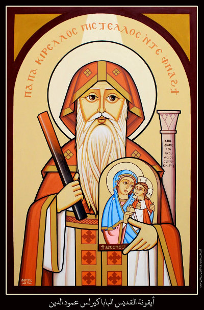

مدونة تاريخ المجامع المسكونيه
الرئيسية
الأحداث
عنّا
تواصل
متصفحك لا يدعم تشغيل الفيديو
مرحبا بكم في مدونه المجامع المسكونيه
تعرف علي مواضع فاصله في تاريخ كنيستنا
أحداث غيرت التاريخ
مجمع نيقيه
هو المجمع المسكوني الأول Council of Nicaea وكان بسبب بدعة آريوس Arius الهرطوقي، وذلك بأن كتب البابا الكسندروس إلى الملك قسطنطين الكبير يطلب منه عقد مجمع مسكوني للبت في هذه البدعة
مجمع افسس
بدعة بيلاجيوس
بدعة نسطور بطريرك القسطنطينية

مجمع القسطنطينيه
1- بدعة أبوليناريوس أسقف اللاذقية
2- بدعة أوسابيوس مجدد تعاليم سابليوس
3- بدعة مكدونيوس أسقف القسطنطينية المعزول